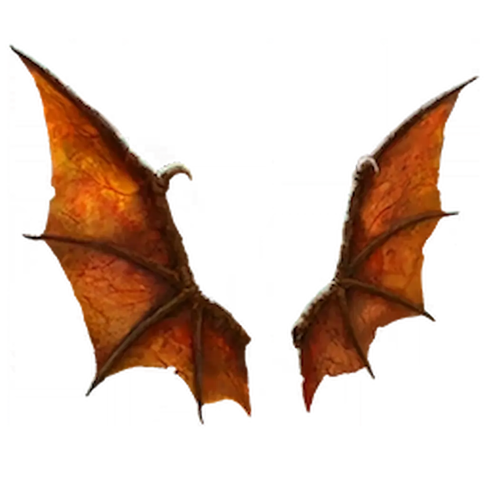

← Powrót do map
← Powrót do poprzedniej strony
Musisz mieć ukończony główny Easter Egg na mapie Ashes Of The Damned. Wyzwanie aktywuje się na rundzie 20+.

NAGRODA: Relikt Smocze Skrzydła
Co daje ten relikt po aktywacji?
- EFEKT: Całkowicie wyłącza on wypadanie standardowych bonusów z zombie.
Jedynym sposobem na zdobycie Max Ammo czy darmowych perków będą teraz zadania TED-a, GobbleGums lub ukryte Easter Egg. Nawet rundy z Ravagerami nie dadzą Wam amunicji!.